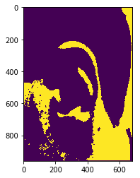
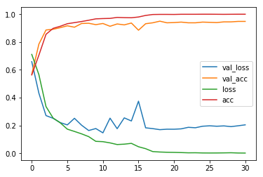

Problem Definition
In this assignment, we build a Convolutional Neural Network to implement human ear verification.
The main goal is to identify the owner of the ear within constrained and unconstrained conditions. We divided this project into two parts. The segmentation and the verification.
The first challenge is to segment ears from images. This is because our datasets contain ears pictures taken in wild and those taken in lab also contain unnecessary details like the donut device. Thus, segmentation is neccessaty to improve verification accuracy.
And the second problem is to implement the ear verification algorithm. That is, given two ear pictures we should know whether they belong to the same person or not.
This can also be used to fulfill the ear identification -- computing the verification loss of anchor picture with each person's picture in the database and choose the one with the lowest loss and highest softmax output.
Background Survey
Ear recognition: More than a surveyconcludes the performance of AWE toolbox on different datasets.
Human Ear Recognition Using Geometrical Features Extraction preprocess the data with resizing and Gaussian Filter. And then they use the Snake Model to detect ears. And then an edge detection is used. (1.5*5 median filter. 2.Global Threshold Binarization. 3. Canny edge detector). After edge detection and morphological operations, they extract a feature vector with seven values and use K-NN to make the classification.
There're also some works that extract feature vectors at first and then use CNN to make classification.
We decide to try some geometric detection and CNN classification.
Method and Implementation
We implemented a Faster RCNN to detect and segment the ears. We labeled all the images by ourselves to locate the ears in the original datasets' images. And then used these images to train a Faster RCNN that can work both in constrained and unconstrained conditions.
In segmentation part, we also tried to use some geometric methods to segment the ears.
1. Build-in opencv Haar Cascade with pretrained weights online.
2. Build-in opencv edge detection function 'Findcontour' is also used.
In verification part, we tried to trained different models.
1. A feature extraction model with pretrained ResNet50 weights and a classifier with ResNet shortcut connection.
2. A feature extraction model with shortcut connection and a classifier with shortcut connection.The feature-map model and classifier are trained at the same time.
3. A feature extraction model with shortcut connection and a classifier with shortcut connection.The feature-map model is pre-trained with Triplet Loss and then be used to train the classifier.
Basic Pipeline
1. Data Preprocess.(Making annotation, cropping and resizing)
We resized all the images into 960*680 to accelerate the computing speed. And we manually make annotation of ears location and crop the ears in each image.
2. Generate data pairs and triads(For Triplet Loss) for CNN training.
The pair data is like [Img1,Img2,label]. Img1 and Img2 are images to be verified and label 0 means two images come from different people.
The triad data is structured like [Anchor_Img,Positive_Img,Negative_Img]. Triad data is used to train a triplet_loss feature map extraction model. Triplet loss aims to bring Anchor_Img and Positive_Img closer,Anchor_Img and Negative_Img farther.(All in feature domain.)
And then the triplet loss feature map can be used to train the classifier
3. Ear Detection(Segmentation) with Faster RCNN. (findcontour and Haar works not that good.)
Detect ears with Faster-RCNN and then crop the detected ears,resize them into 224*224.
4. Ear verification with a CNN claasifier.
Run verification on the detected ears. (Training set and test set are generated in step-2 pair datas.)
Experiments
1. Findcontour and Haar detection performance.
2. Train two detection models with different performance(evaluate with mean IOU) to evaluate the detection model's contribution to the whole program. The better one is trained on more epochs to have lower loss.
3. Experiment to evaluate the effect of learning rate.
4. Experiment to evaluate the performance of three feature extraction model.
5. Evaluate the contribution of the two parts to the whole model's performance.
The evaluation of detection is based on mean IOU, of verification is based on accuracy and of the whole program is based on accuracy.
Results
List your experimental results. Provide examples of input images and output images. If relevant, you may provide images showing any intermediate steps. If your work involves videos, do not submit the videos but only links to them.
The notation EX ? is related to the experiments defined in previous section.
Results | ||||
| Experiment | Database | Result1 | Result2 | Evaluation |
| EX_1_Findcontour | Images resized into 960*680 |
 | N/A |
|
| EX_1_Haar_Detection One is Good and One is bad |
Images resized into 960*680 |
N/A |
||
| Ex_2_Faster_RCNN The second one is wrongly detected |
Images resized into 960*680 |
IOU: 0.8718 |
||
| Ex_2_Better_Faster_RCNN Both are correctly detected |
Images resized into 960*680 |
IOU: 0.9047 |
||
| Ex_4_Cls_with_Pretrained_ResNet 50 | Detected ears resized in 224*224 |
Test Accuracy with the simple Faster RCNN is about 80%. |
N/A |
Best_Validation_Accuracy is about 85% |
| Ex_4_Cls_with_Simple_ResNet_Feature_Map | Detected ears resized in 224*224 |
Test Accuracy with the simple Faster RCNN is 79.1%. |
Test Accuracy with the Better Faster RCNN is about 82.3%. |
Best_Validation_Accuracy is at 92% |
| Ex_4_Cls_with_Triplet_Loss_Feature_Map | Detected ears resized in 224*224 |
Best Test Accuracy with the simple Faster RCNN is about 84.43%. |
Best Test Accuracy with the Better Faster RCNN is about 88.1%. |
Best_Validation_Accuracy is at 95.66% |
| Ex_5_Cls_with_Triplet_Loss_After_Removeing_Dirty_Data | Detected ears resized in 224*224 |
Best Test Accuracy with the simple Faster RCNN is about 89.41%. |
Best Test Accuracy with the Better Faster RCNN is about 92.3%. |
Best_Validation_Accuracy is at 99% |
Training Logs | ||
| Experiment | Training Log | |
| Small Triplet loss trainable feature Model | ||
| Small Triplet loss Untrainable feature Model |  | |
| Large Triplet loss trainable feature Model | ||
After Removing Dirty Data Logs | ||
| Test Log | ||
Dirty Data are some wrong samples generated before used to train Triplet Loss.
Trilet Loss only use Triad Data like [Img1 of PersonA,Img2 of PersonA,Img3 of PersonB] to train.
But we added some data like [Img1 of PersonA,Img2 of PersonA,Img3 of PersonA] into training set. After removing those data,performance increased greatly.
Discussion Problems
- 1.Discussion performance geometric detection methods.
- 2.Train two detection models with different performance(evaluate with mean IOU) to evaluate the detection model's contribution to the whole program. The better one is trained on more epochs to have lower loss.
- 3.What effect does the learning rate have on how your neural network is trained? Illustrate your answer by training your model using different learning rates.
- 4.Experiment to evaluate the performance of three feature extraction model.
- Evaluate the contribution of the two parts to the whole model's performance.
Results are shown in previous section Results[Ex_1].
The opencv build in findcontour function can be used to detect edges. But it requires an artificially designed threshold for different images and is not easy to segment the ear and the face skin.
The Haar detection can work most of the time. But it's easy to go wrong and often cannot detect any ears as it has shown in Results[EX_1_Haar_Detection].
Thus, we decided to use a deep learning method for ear segmentation.
To find out the importance of detection models' ability, we trained two models (one of whom with higher IOU and lower loss) to detect ears.
We use Faster-RCNN to detect ears and we modified the model framework from you359's work.
We made the annotation all by our selves and the modified the Faster-RCNN model workable on our datasets.(The verification network is totally built and tested by ourselves without any online sources' help.)
We notate the detected ears generated by the better model as 'DetectB' and the other one as 'DetectA' in the following discussions.
The learning rate can't be too large. For pre-trained ResNet-50 + classifier, the lr should be like 0.00001 and for simple resblock feature map + classifier, the lr can be at most 0.0001.
If the learning rate is too large, then the loss will fluctuate violently. And the loss will not decrese at all. The acc will always be about 50% (similar to randomly guess). I think that's because of the sigmoid/softmax output activation function. The large learning rate lead to gradient vanishing and then the model cannot learn at all.
With small learning rate, the loss can be reduced and acc can increase correctly.
We tried 6 different structures of feature extraction model.(We discussion the performance based on accuracy when they are attached to classifier and get well trained.)
1. ResNet-50 weights
This model performs worst with an acc lower than 80% both on DetectA and DetectB.[Definition of DetectA and DetectB can be seen in disscusion 2].
2. Simpler CNN with shorcut
Surprisingly, this model works better than the previous one. In my opinion I think it's because of the small size of the datasets. Small dataset are harder to train a large network and simpler network can be easier to convergence.
3. Small shorcut CNN with Triplet loss (leave it untrainable when training the classifier)
Small model means the feature map of each image is [27*27*64].
This model have an acc at 84.43% on DetectA and 88.1% on DectectB.
The acc is much higher than previous models.
4. Small shorcut CNN with Triplet loss
This model have an acc at 79.6% on DetectA and 85.8% on DectectB.
With trainable feature map model, the acc comes down. I think it's because of overfitting.
5. Large shorcut CNN with Triplet loss (leave it untrainable when training the classifier)
Large model means the feature map of each image is [56*56*128].
Does not converge. We did not find a suitable learning rate to make it work.
6. Large shorcut CNN with Triplet loss
This model have an acc at 80.73% on DetectA and 85.4% on DectectB.
7. Assume we have perfect detection model,the triplet loss works much better.
During the training period, the highest validation acc is nearly 96%, which means with ideal detection model, the triplet loss can perform much better than normal cross-entrophy loss.
And we tried to train 20 epochs on ground truth and 1 epoch on detected images. The acc is 92%.
From which we can see the main bottleneck of this program is the performance of the detection model.
With fixed feature_extraction model, it's obviously that the detection model with higher IOU performs better. That's because we train the feature_extraction model based on the manually cropped ground truth. The higher the IOU is, the closer the distance between ground truth and detected ears in fearture domain.
And with fixed feature extraction model, it's surprisingly that relatively smaller network performs better than the larger networks. The smaller feature extraction model has higher general acc and can be computed faster. And in the triplet loss models, small network with less parameters in feature map performs better. And it seems that it's a better idea to leave the pre-trained triplet loss featuren extraction model untrainable during the following training steps.
And in my opinion, small networks have lower ability to describe comple boundaries so they're less likely to overfitting.The feature map with less parameters is the same reason.
Conclusions
We succefully build two connected neural networks to fulfill this ear recognition. We tested two different detection models and six different verification models. The best combination has an acc at 88.1%(Trained on ground Truth and tested on Detected Images). We borrowed the idea of DeepID to use Triplet Loss to improve the performance. Due to the workload and project focus, we trained the detection model based on an open-source Faster-RCNN model and then build the verification model totally by ourselves. By comparision, we bulid an ideal system for ear varification with accuracy of 88.1%. And we discuss the potential ways of improving accuracy. For example, we can try to find a better detection model.
Credits and Bibliography
The Assignment Cookbook by CS 640 Assignment.
The open Faster-RCNN by you359.
Xinsha Wang works with me to make annotations, design the sturcture and test the model.